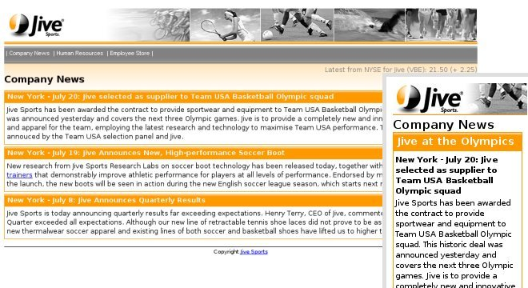

In this module you will work on the Company News page. Note that this page uses the jivearticle.mlyt layout. The Smartphone version of the article layout does not contain a menu section.
This page includes alternate section titles that are handled by a select statement. The effect of the selection is to use the different texts depending on whether the request comes from a Smartphone or a PC.
The sel:select and related elements are an implementation of the content selection mechanism that is part of the W3C Device Independent Authoring Language (DIAL). Details of the mechanism are given in the companion W3C specification Content Selection for Device Independence (DISelect).

Add the select DISelect namespace declaration to the html.
<?xml version="1.0" encoding="UTF-8"?> <html xmlns="http://www.w3.org/2002/06/xhtml2" xmlns:mcs="http://www.volantis.com/xmlns/2006/01/xdime/mcs" xmlns:sel="http://www.w3.org/2004/06/diselect"> ... </html>
<div id="article">
<div class="company_item">
<sel:select>
<sel:when expr="device:getAncestorRelationship('PC') != 'ancestor'">
<h3 class="company_header">Jive at the Olympics</h3>
<h4>New York - July 20: Jive selected as supplier to Team USA Basketball Olympic squad </h4>
</sel:when>
<sel:otherwise>
<h3 class="company_header">New York - July 20: Jive selected as supplier to Team USA
Basketball Olympic squad </h3>
</sel:otherwise>
</sel:select>
<p> Jive Sports has been awarded the contract to provide sportswear and equipment to Team USA
Basketball Olympic squad. This historic deal was announced yesterday and covers the next three
Olympic games. Jive is to provide a completely new and innovative line of sports shoes and
apparel for the team, employing the latest research and technology to maximize Team USA
performance. The agreement was jointly announced by the Team USA selection panel and Jive.
</p>
</div>
<div>
<?xml version="1.0" encoding="UTF-8"?>
<html xmlns="http://www.w3.org/2002/06/xhtml2"
xmlns:mcs="http://www.volantis.com/xmlns/2006/01/xdime/mcs"
xmlns:sel="http://www.w3.org/2004/06/diselect">
<head>
<title>Company News</title>
<!--Links to the layout and theme for this page -->
<link rel="mcs:layout" href="/jivearticle.mlyt"/>
<link rel="mcs:theme" href="/jive.mthm"/>
</head>
<!-- Page body -->
<body>
<!-- The common material for the page header -->
<div>
<!-- The banner -->
<div id="logo">
<a class="homelogo" href="jivehome.xdime">
<object class="homelogo" src="/images/jive_logo.mimg"/>
</a>
</div>
<div id="photos">
<object src="/images/photos.mimg"/>
</div>
</div>
<!-- The main menu -->
<div id="menu_company_news" class="main_menu">
<a class="pnav" href="companyNews.xdime">
<object src="/images/menu_company_news.mimg"/>
</a>
</div>
<div id="menu_human_resources" class="main_menu">
<a class="pnav" href="humanResources.xdime">
<object src="/images/menu_human_resources.mimg"/>
</a>
</div>
<div id="menu_employee_store" class="main_menu">
<a class="pnav" href="employeeStore.xdime">
<object src="/images/menu_employee_store.mimg"/>
</a>
</div>
<!--The current stock price-->
<div id="stockprice"> Latest from NYSE for Jive (VBE): 21.50 (+ 2.25) </div>
<!-- Page Title -->
<h2 id="title">Company News</h2>
<!-- The article -->
<div id="article">
<div class="company_item">
<sel:select>
<sel:when expr="device:getAncestorRelationship('PC') != 'ancestor'">
<h3 class="company_header">Jive at the Olympics</h3>
<h4> New York - July 20: Jive selected as supplier to Team USA Basketball Olympic squad
</h4>
</sel:when>
<sel:otherwise>
<h3 class="company_header"> New York - July 20: Jive selected as supplier to Team USA
Basketball Olympic squad </h3>
</sel:otherwise>
</sel:select>
<p> Jive Sports has been awarded the contract to provide sportswear and equipment to Team
USA Basketball Olympic squad. This historic deal was announced yesterday and covers the
next three Olympic games. Jive is to provide a completely new and innovative line of
sports shoes and apparel for the team, employing the latest research and technology to
maximize Team USA performance. The agreement was jointly announced by the Team USA
selection panel and Jive. </p>
</div>
<div class="company_item">
<sel:select>
<sel:when expr="device:getAncestorRelationship('PC') != 'ancestor'">
<h3 class="company_header">New Soccer Boot</h3>
<h4> New York - July 19: Jive Announces New, High-performance Soccer Boot</h4>
</sel:when>
<sel:otherwise>
<h3 class="company_header"> New York - July 19: Jive Announces New, High-performance
Soccer Boot </h3>
</sel:otherwise>
</sel:select>
<p> New research from Jive Sports Research Labs on soccer boot technology has been released
today, together with a line of <a href="#">soccer boots and trainers</a> that demonstrably
improve athletic performance for players at all levels of performance. Endorsed by many
top division teams at the launch, the new boots will be seen in action during the new
English soccer league season, which starts next month. </p>
</div>
<div class="company_item">
<sel:select>
<sel:when expr="device:getAncestorRelationship('PC') != 'ancestor'">
<h3 class="company_header">Quarterly Results</h3>
<h4>New York - July 8: Jive Announces Quarterly Results</h4>
</sel:when>
<sel:otherwise>
<h3 class="company_header"> New York - July 8: Jive Announces Quarterly Results </h3>
</sel:otherwise>
</sel:select>
<p>Jive Sports is today announcing quarterly results far exceeding expectations. Henry
Terry, CEO of Jive, commented: "Sales for the First Quarter exceeded all expectations.
Although our new line of retractable tennis shoe laces did not prove to be as profitable
as imagined, our new thermalwear soccer apparel and existing lines of both soccer and
basketball shoes have lifted us to higher than expected revenue." </p>
</div>
</div>
<!-- The common material for the page footer -->
<div id="footer">
<p>Copyright <a href="jivehome.xdime">Jive Sports</a></p>
</div>
</body>
</html>
| Name | Purpose |
|---|---|
| div | A section used to add extra structure to documents. Style sheets can be used to control the presentation. |
| h1, h2, h3, h4, h5, h6 | Heading elements for sections within a document. The number associated with each element indicates its relative position in the hierarchy of headings, with 1 indicating the top level and 6 the lowest level. |
| p | Block element that defines a paragraph. |
| sel:select | Container for one or more sel:when elements and an optional sel:otherwise element. The expr attributes on the sel:select and sel:when elements control the conditions for processing. |
| sel:otherwise | Defines a set of material to be selected for processing if none of the sel:when elements within the containing sel:select element are selected. |
| sel:when | One of a number of possible matches that could be selected. The content is selected for processing if the expr value is matched and the precept on the containing sel:select element places the sel:when element in scope. |
| Core attributes | Attributes that are common to XDIME 2 elements. |
| Selection attributes | Attributes used to select alternative content. |